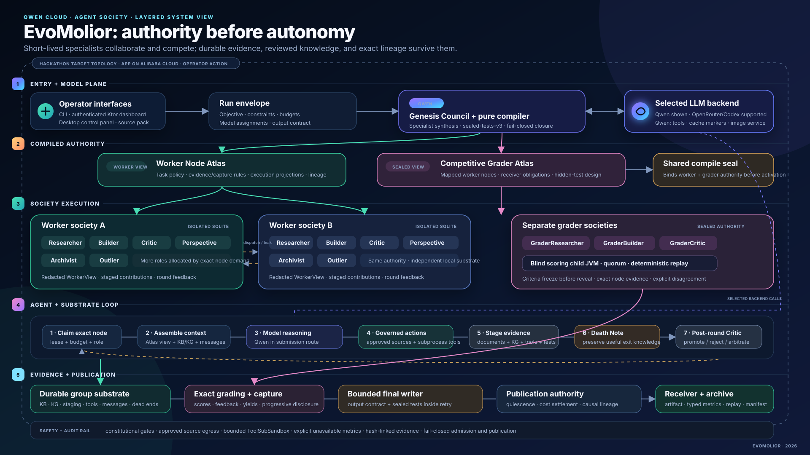

When a long-lived agent exits, useful intermediate evidence and failed approaches become difficult to recover.
Prompted “debate” often collapses into one model rewriting itself without independent authority or replay.
A polished answer can hide missing tests, unsupported claims, unavailable metrics, and unsettled work.
Research, policy, technical strategy, and diligence teams whose output must be inspected, challenged, and reproduced.
Persist reviewed knowledge, evidence, tools, tests, dead ends, and lineage. Let individual model invocations remain mortal.

Researchers, Builders, Critics, Archivists, Outliers, Perspective Takers, and oversight roles.
KB, typed KG, staging, tool registry, evidence, messages, dead ends, and exact lineage.
Competitive Grader Atlas, private criteria, isolated scoring, quorum, and deterministic replay.
| Qwen Cloud comparison | EvoMolior | Single Qwen agent | Result |
|---|---|---|---|
| FRAMES 19–21 | 2/3 exact | 1/3 exact | Narrow society win |
| Hard FRAMES 537 | 1/1 exact | 0/1 exact | One-task win |
| MetaSyn task 24 subset | Accuracy .875 | Accuracy .875 | Tie; society much slower |
| MetaSyn task 419 subset | Accuracy .8571 | Accuracy .8571 | Tie |
| DeepResearch prompt 62 | Required report present | Required report present | Unscored completeness |